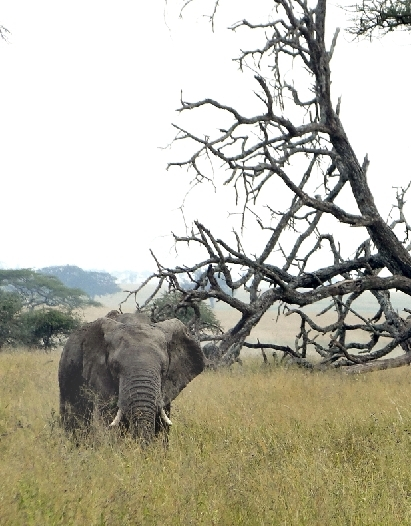

The Sad Slaughter of Elephants For Their Tusks
A massacre of the world's elephants is going on right now. One hundred thousand African elephants were been killed by poachers between 2010-2012 and the total population of elephants in Africa has declined 64% in a decade.
This slaughter is occurring because elephants are killed for their tusks. Ivory has long been a status symbol in Asia and increased prosperity in China and southeast Asia has allowed a newly created middle class to purchase ivory on the black market. Furthermore, many traditional societies believe that ivory has medicinal powers (which it does not) and it is often ground up to produce expensive medicines.
The continuing demand for ivory produces an army of poachers who will fill this demand. These poachers are often allied with terrorist groups who use the proceeds from the illegal ivory trade to finance their activities. Because of this poacher/terrorist connection, the poachers are often armed with sophisticated weaponry including machine guns.
In an effort to protect elephants, The Convention on International Trade in Endangered Species ("CITES") in 1989 banned the sale of all ivory except "old estate ivory". However, it left enforcement to the individual countries and this has been the loophole. Some countries did not sign the treaty and among those who did many do not enforce it at all.
Concerted global action is required if we are to save the elephants. As the secretary-general of CITES accurately states, "In terms of concrete actions, we need to move to focus on the front-line and tackle all links in the illegal ivory trade chain -- improve local livelihoods (for those living with elephants), strengthen enforcement and governance and reduce demand for illegal ivory."

WHAT CAN WE DO TO PROTECT ELEPHANTS FROM
THIS TERRIBLE SLAUGHTER?
1. Support and expand international, federal and state laws that regulate and prohibit the ivory trade.
2. Tell your legislators of your desire to protect elephants as this will affect their policies on the importation of ivory. The same legislators who take steps to protect wildlife in the U.S. are generally interested in protecting wildlife elsewhere. Write or email your state and federal representatives and ask what their positions are on wildlife protection in general and elephants in particular. When I contact my representatives, I always specifically state that I would like a call or letter back.
3. Insist that the rules promulgated by CITES in 1989 be enforced. China is the worst offender in terms of enforcement so please write the Chinese embassy.
3505 International Place, N.W.
Washington, D.C. 20008
Email: chinaembpress_us@mfa.gov.cn
4. Do not purchase ivory yourselves. Even "old estate ivory" (defined as ivory that was more than 100 years old at the time of import) reinforces the idea that ivory is desirable. Frequently the ivory you buy today is poached, despite the often forged documentation that accompanies it.
5. Do not travel to countries in Africa that do not protect elephants. Many African countries are not putting the necessary resources into protecting elephants and other wildlife. Write to their embassies and express your feelings on this issue and the reasons why you are traveling (or not traveling) to their country. Some nations, such as Kenya, are making an honest effort to protect elephants and recently have been successful by employing drones to spot poachers. - Larry
For further information, please consult the following websites:
Pachyderm Power
The Dodo
National Geographic
CBS News
Bloody Ivory